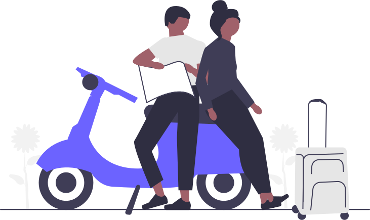

Other hobbies
This page will show you other hobbies that can have a positive impact on you!

Other hobbies include..
Cooking
The act of Cooking is a good hobby to get into, it allows you to develop the skill to plan ahead and focus on the present, while also being a good life skill.

Hiking
Hiking can have a positive effect on both your physical and mental health.

Running
Running, like hiking, can have a positive effect on both your physical and mental health.